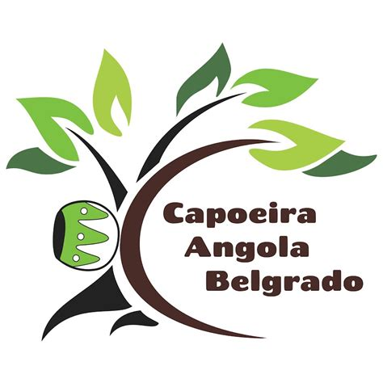
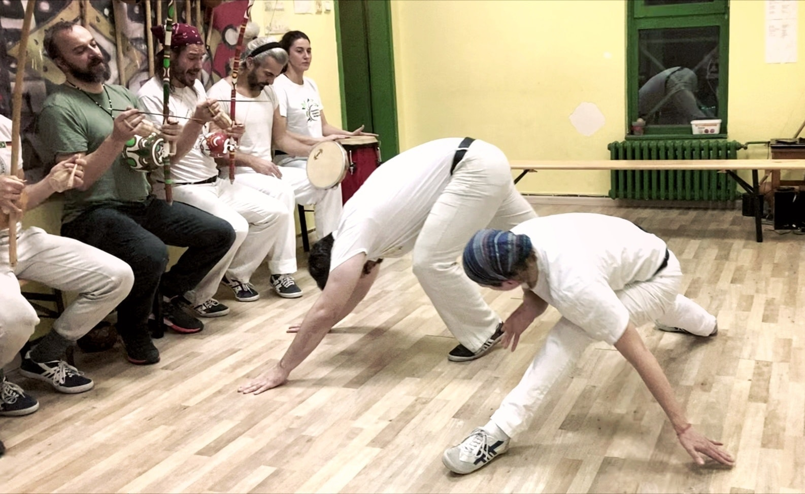
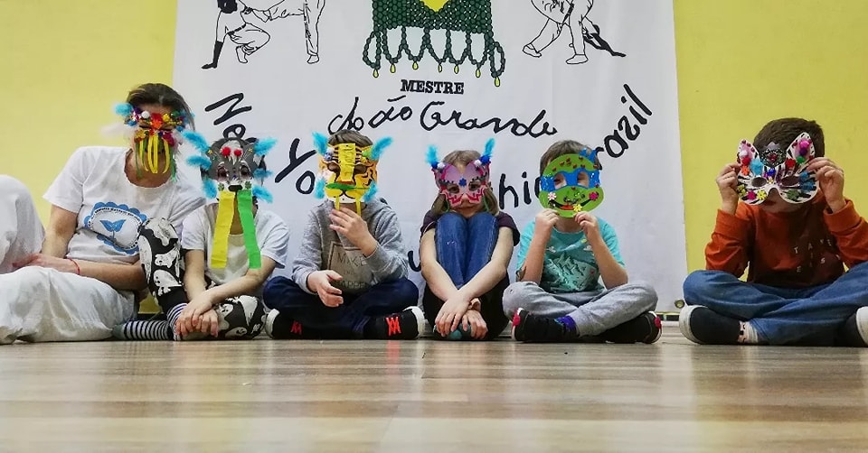

capoeira angola
Capoeira Angola Center Belgrade
Dobrodošli

Zakoračite u živopisni svet kapuere angole, veštine koja objedinjuje pokret, muziku i kulturnu ekspresiju. Držimo časove za odrasle i decu, od znatiželjnih početnika do iskusnih igrača. Profesorka Sandra, sa preko 25 godina iskustva u podučavanju, sprovešće vas kroz zanimljivi svet kapuere angole koji obuhvata:
- Dinamičke pokrete: Naučite kružne i direktne napade, kao i jednostavne i kompleksnije odbrane. Razvijte snagu i agilnost i naučite kako da pravilno vodite računa o svom telu.
- Uranjanje u svet muzike: Pustite da vas nosi duh kapuere dok svirate birimbau, pandeiro ili druge instrumente. Unesite se u detalje muzičke teorije proučavanjem karakteristika i finesa muzike kapuere i afro-brazilske matrice.
- Otkrivanje sebe: Upoznajte se sa neotkrivenim stranama svoje ličnosti. Ojačajte ili razvijte zdrave načine komunikacije i povezivanja sa drugima. Steknite zdrav odnos prema svom telu i osvestite svoje pokrete. Vaš um će biti prisutniji u svakodnevnom životu, a vaše telo će postati više vaše.
- Kulturni doživljaj: Istražite bogatu istoriju i tradiciju kapuere angole, jedinstvene afro-brazilske veštine koja je svrstana na listu svetske nematerijalne kulturne baštine UNESCO-a.
Iskoristite prvi besplatan čas za početnike već ove nedelje.

KAPUERA ZA DECU
U radu sa decom usmereni smo na razvoj opštih i specifičnih fizičkih sposobnosti u skladu sa uzrastom.
- Opštim vežbama unapređujemo kondiciju, spretnost i pravilan razvoj tela.
- Podučavamo pokrete i igru kapuere.
- Razvijamo muzikalnost kroz ritmičke i melodijske vežbe.
- Deci pružamo neposredan susret sa muzikom i jedan deo svakog časa je posvećen sviranju instrumenata u okviru zajedničkog stvaranja muzike kapuere.
- Učimo šta je zdrava komunikacija i radimo na razvoju samopouzdanja uz poštovanje drugih.
- Podstičemo decu u razvijanju društvenih veština i timskog rada.
- Negujemo osećaj pripadnosti i međusobnog uvažavanja uz učenje kompromisa i granica.
Koristimo dečju prirodnu energiju za stimulaciju učenja. Takvim pristupom je deci olakšan sam proces usvajanja znanja i uvažena potreba da u svemu tome ipak budu deca.

Nastojimo da u našoj školi stvaramo podsticajno i ohrabrujuće okruženje za svakoga, što smatramo da je od suštinske važnosti za oslobađanje kreativnosti i lični razvoj. Primenjujemo individualni pristup podučavanja i redovno učestvujemo u događajima posvećenim afro-brazilskoj kulturi. Deo smo međunarodne škole Capoeira Angola Center of Mestre João Grande. Više detalja o našem sistemu rada pročitajte na stranici „O nama“ .